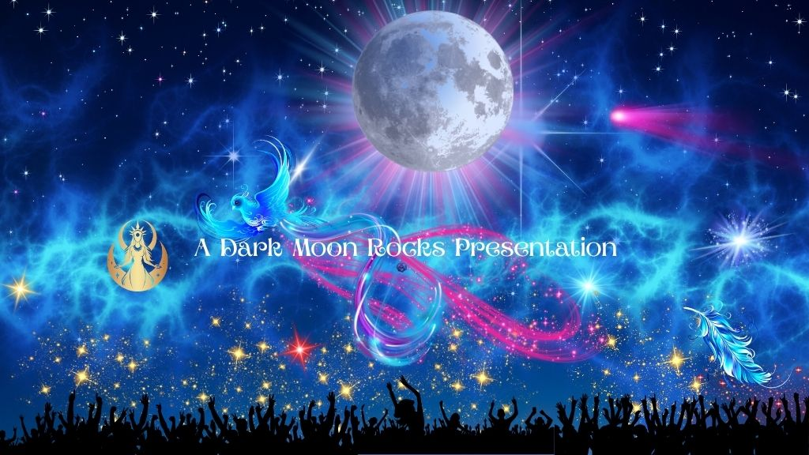
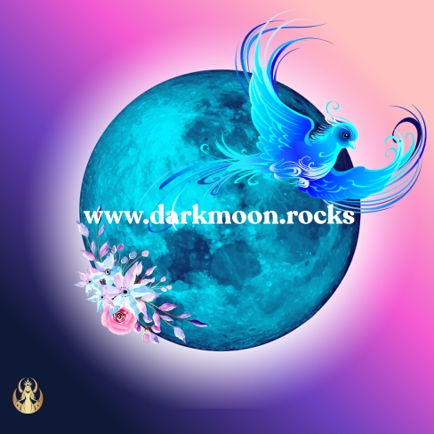

Dark Moon Rocks Radio Music, stories, podcasts and strange things from the canal. Dark Moon Rocks Radio broadcasts around the clock with original music and is an independent online radio station broadcasting original music, spoken word, podcasts, guided meditation, storytelling and reflective conversation. Broadcasting 24 hours a day, the station wanders through mythology, folklore, psychology, symbolism, creativity, personal development and the stranger edges of ordinary life. Created by Kate Silveness from life aboard a narrowboat on the Kennet & Avon canal, Dark Moon Rocks is deliberately difficult to fit into one neat category. Some programmes are thoughtful and educational. Some are atmospheric. Some are funny, experimental or deeply personal. There is original music, long-form conversation, teaching songs, guided journeys, stories, podcasts and moments of quiet in between.
During live shows you may hear conversations from the canal, observations from daily life, new music, mythology, psychology, folklore, creative ideas and whatever happens to wander into the studio that morning. If the live broadcast is not what you are looking for, scroll down for the schedule and on-demand programmes.
What Is Dark Moon Rocks Radio? Dark Moon Rocks is for people who like to listen a little differently. The station grew from a love of radio, music, storytelling and the way ideas become more interesting when they are allowed to wander. Rather than following one fixed genre, Dark Moon Rocks moves between original music, spoken word, mythology, psychology, folklore, meditation, philosophy, spirituality and everyday experience. There is no requirement to agree with everything you hear. Curiosity matters more than certainty here. Ideas can be explored, questioned, changed, challenged and occasionally abandoned entirely. Much of the music broadcast on Dark Moon Rocks is original work created for the station. Spoken programmes include the Dark Moon Rocks Morning Show, Dark Moon Weaves, guided meditations, teaching pieces, stories and other independent productions. The result is part radio station, part podcast network, part creative laboratory and part very strange kitchen-table conversation.Morning shows, teaching songs, meditation, podcasts and evening replays. Dark Moon Rocks broadcasts 24 hours a day. Regular programming includes the morning show, original music, teaching songs, meditation sessions, podcasts, spoken-word programmes and evening replays. Between scheduled programmes, AutoDJ continues with music and recordings from the Dark Moon Rocks library. View the current Dark Moon Rocks Radio schedule below. It may change from time to time so check out the link.
 Schedule
Schedule

More Dark Moon Rocks
Take Dark Moon Rocks With You Dark Moon Rocks can be listened to through your web browser on a phone, tablet or computer. The Dark Moon Rocks web app can also be added to a compatible device so the station is easier to return to without hunting for the website every time. iPhone or iPad Open the Dark Moon Rocks app page in Safari. Tap the Share button, choose Add to Home Screen, then confirm. Android Open the app page in your browser. Depending on your device, choose Install App or Add to Home Screen from the browser menu. Computer. Compatible browsers may offer an install icon in the address bar. You can also simply bookmark Dark Moon Rocks and listen directly through the website.

About the Content Dark Moon Rocks is created for entertainment, education, creativity and personal reflection. Programmes may explore psychology, spirituality, mythology, folklore, symbolism, altered states, personal development and other subjects where different interpretations and beliefs naturally exist. Ideas presented on the station are invitations to think and explore rather than instructions about what you must believe. Dark Moon Rocks content does not replace medical, psychological, legal, financial or other professional advice. Some programmes include guided meditation, relaxation exercises, hypnotic language, immersive storytelling or repetitive audio techniques intended to encourage focused attention or relaxation. Do not listen to meditation, hypnosis or deeply relaxing audio while driving, operating machinery or doing anything that requires your full attention. If a programme makes you uncomfortable, stop listening and choose something else. You are always in control of what you listen to and how you engage with it. Independent Radio for Curious Minds Dark Moon Rocks Radio is still evolving. New music, programmes, podcasts, meditations, stories and experiments are added as they are created. Some ideas become permanent parts of the station. Others appear briefly, do what they came to do, and disappear again. That is part of the point.
So pull up a chair, put the kettle on and have a wander.
